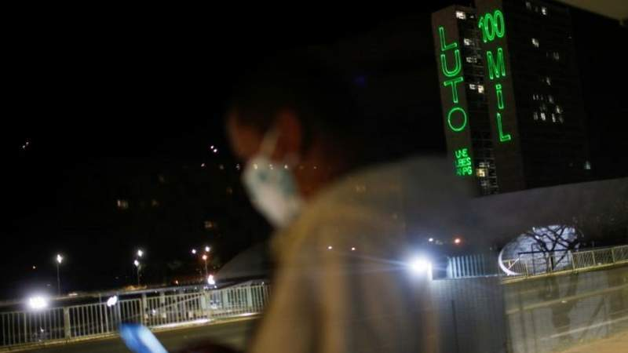

Saúde
Como voltar a se exercitar sem risco à saúde após ter covid-19
André Biernath, Da BBC News Brasil em São Paulo, às 11:50 28 novembro 2020Mesmo em casos leves, o coronavírus pode afetar o coração. Para piorar, essa falha muitas vezes passa despercebida e traz graves consequências somente durante a atividade física. A recomendação é procurar o médico e fazer uma avaliação antes de retomar rotina de treinos.
LEIA MAIS>Com números da covid-19 em alta, Brasil registra 514 mortes em 24 horas e total de óbitos pela doença passa dos 171,9 mil
Publicado às 21:05 27 novembro 2020